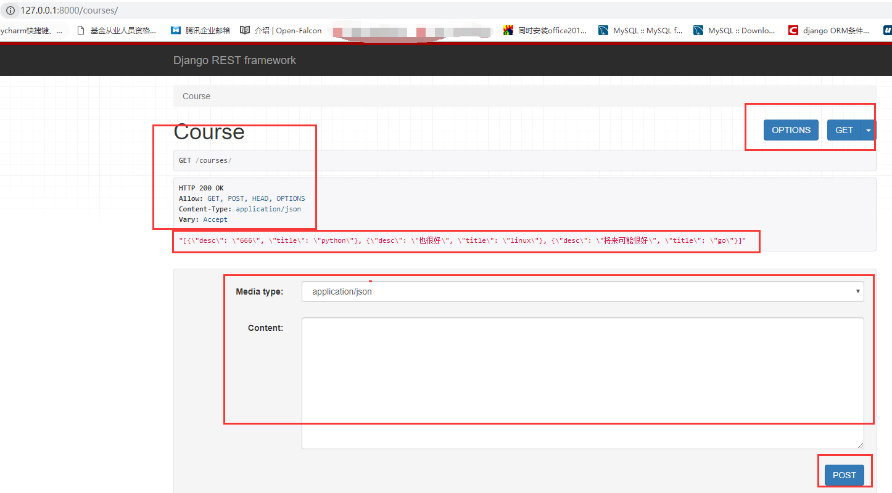
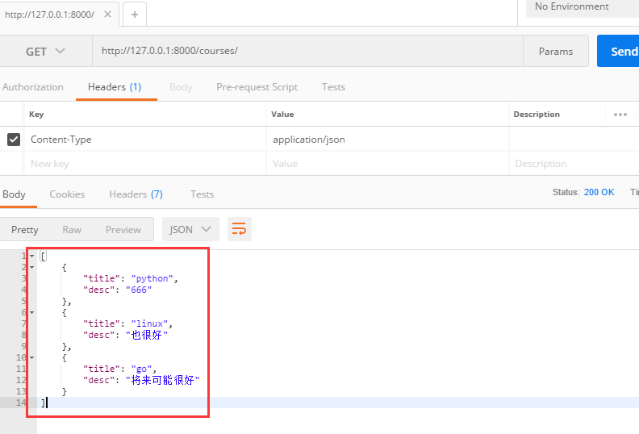
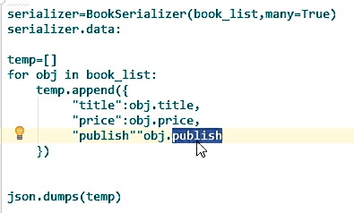
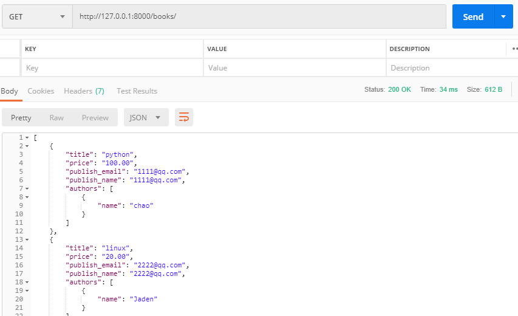

首先按照restful规范咱们创建一些api接口，按照下面这些形式写吧：
Courses --- GET ---> 查看数据----->返回所有数据列表[{},{},]
Courses--- POST --->添加数据 -----> 返回添加的数据{ }
courses/1 ---PUT---> 更新pk=1的数据 ----->返回更新后的数据{ }
courses/1 --- DELETE---> 删除pk=1的数据 -----> 返回空
courses/1 --- GET --->查看单条数据 -----> 返回单条数据 { }
这样，我们先看一个drf给我们提供的一个类似于Postman功能的页面，首先我们创建一个django项目，创建一个Course表，然后添加一些数据，然后按照下面的步骤操作，
from django.shortcuts import render,HttpResponse,redirect
import json
from django.views import View
from app01 import models
from rest_framework.views import APIView
#引用drf提供的Response对象
from rest_framework.response import Response
#写我们的CBV视图
class CourseView(APIView):
#返回所有的Course数据
def get(self,request):
course_obj_list = models.Course.objects.all()
ret = []
for course_obj in course_obj_list:
ret.append({
"title":course_obj.title,
"desc":course_obj.desc,
})
# return HttpResponse(json.dumps(ret, ensure_ascii=False))
return Response(json.dumps(ret, ensure_ascii=False)) #这里使用Response来返回消息
def post(self,request):
print(request.data)
return HttpResponse('POST')INSTALLED_APPS = [
'django.contrib.admin',
'django.contrib.auth',
'django.contrib.contenttypes',
'django.contrib.sessions',
'django.contrib.messages',
'django.contrib.staticfiles',
'app01.apps.App01Config',
'rest_framework', #将它注册成App
]"""
from django.conf.urls import url
from django.contrib import admin
from app01 import views
urlpatterns = [
url(r'^admin/', admin.site.urls),
url(r'^courses/', views.CourseView.as_view(),name='courses'),
]
这里面我们可以发送不同类型的请求，看到对应的返回数据，类似于Postman，但是没有Postman好用，所以以后调试我们还是用Postman工具，但是我们知道一下昂。
上面的数据，我们通过json自己进行的序列化，其实django也给我们提供了一个简单的序列化组件，看用法：
from django.shortcuts import render,HttpResponse,redirect
import json
from django.views import View
from app01 import models
from rest_framework.views import APIView
from django.core.serializers import serialize #django的序列化组件，不是我们要学的drf的序列化组件昂
#不用json自己来序列化了，太麻烦，我们使用drf提供的序列化组件
from rest_framework.response import Response
class CourseView(APIView):
def get(self,request):
course_obj_list = models.Course.objects.all()
# ret = []
# for course_obj in course_obj_list:
# ret.append({
# "title":course_obj.title,
# "desc":course_obj.desc,
# })
# return HttpResponse(json.dumps(ret, ensure_ascii=False))
# return Response(json.dumps(ret, ensure_ascii=False)
se_data = serialize('json',course_obj_list,ensure_ascii=False)
print(se_data)#也拿到了序列化之后的数据，简洁很多
#[{"model": "app01.course", "pk": 1, "fields": {"title": "python", "desc": "666"}}, {"model": "app01.course", "pk": 2, "fields": {"title": "linux", "desc": "\u4e5f\u5f88\u597d"}}, {"model": "app01.course", "pk": 3, "fields": {"title": "go", "desc": "\u5c06\u6765\u53ef\u80fd\u5f88\u597d"}}]
return Response(se_data)那么我们知道了两个序列化方式了，这个序列化是不是就简单很多啊，但是drf给我们做了一个更牛逼的序列化组件，功能更强大，而且不仅仅能做序列化，还能做其他的事情，所以呢，做api的时候，我们还是用drf提供的序列化组件。
import json
from datetime import datetime
from datetime import date
#对含有日期格式数据的json数据进行转换
class JsonCustomEncoder(json.JSONEncoder):
def default(self, field):
if isinstance(field,datetime):
return field.strftime('%Y-%m-%d %H:%M:%S')
elif isinstance(field,date):
return field.strftime('%Y-%m-%d')
else:
return json.JSONEncoder.default(self,field)
d1 = datetime.now()
dd = json.dumps(d1,cls=JsonCustomEncoder)
print(dd)from django.shortcuts import render,HttpResponse,redirect
import json
from django.views import View
from app01 import models
from rest_framework.views import APIView
from django.core.serializers import serialize #django的序列化组件，不是我们要学的drf的序列化组件昂
#from rest_framework import status #返回指定状态码的时候会用到
#return Response(se_data，status=status=HTTP_400_BAD_REQUEST)
#或者这种方式返回来指定状态码：return JsonResponse(serializer.data, status=201)
from rest_framework.response import Response
# 序列化方式3，1.引入drf序列化组件
from rest_framework import serializers
# 2.首先实例化一个类，继承drf的serializers.Serializer，类似于我们的form组件和models的用法
class CourseSerializers(serializers.Serializer):
#这里面也要写对应的字段，你写了哪些字段，就会对哪些字段的数据进行序列化，没有被序列化的字段，不会有返回数据，你可以注释掉一个，然后看返回的数据是啥
title = serializers.CharField(max_length=32，required=False) #序列化的时候还能校验字段
desc = serializers.CharField(max_length=32)
class CourseView(APIView):
def get(self,request):
course_obj_list = models.Course.objects.all()
# 3.使用我们创建的序列化类
cs = CourseSerializers(course_obj_list, many=True) # 序列化多个对象的时候，需要些many=True参数
#4.通过返回对象的data属性就能拿到序列化之后的数据
se_data = cs.data
print(se_data) #[OrderedDict([('title', 'python'), ('desc', '666')]), OrderedDict([('title', 'linux'), ('desc', '也很好')]), OrderedDict([('title', 'go'), ('desc', '将来可能很好')])] 列表嵌套的有序字典。
#还记得创建字典的另外一种写法吗？这个没啥用昂，给大家回顾一下之前的知识
# d1 = {'name':'chao'}
# d2 = dict([('name','chao'),('age',18)])
# print(d1) #{'name': 'chao'}
# print(d2) #{'age': 18, 'name': 'chao'}
# # 有序字典
# from collections import OrderedDict
# d3 = OrderedDict([('name','Jaden'),('age',22)])
# print(d3) #OrderedDict([('name', 'Jaden'), ('age', 22)])
return Response(se_data) #drf的Response如果返回的是drf序列化之后的数据，那么客户端拿到的是一个有格式的数据，不再是一行显示了看效果：

from django.shortcuts import render,HttpResponse,redirect
from django.views import View
from app01 import models
from rest_framework.views import APIView
from rest_framework.response import Response
from rest_framework import serializers
class CourseSerializers(serializers.Serializer):
title = serializers.CharField(max_length=32)
desc = serializers.CharField(max_length=32)
class CourseView(APIView):
def get(self,request):
course_obj_list = models.Course.objects.all()
cs = CourseSerializers(course_obj_list, many=True)
se_data = cs.data
return Response(se_data)
def post(self,request):
# print(request.data) #{'desc': 'java也挺好', 'title': 'java'}
#发送过来的数据是不是要进行验证啊，drf的序列化组件还能校验数据
cs = CourseSerializers(data=request.data,many=False) #注意必须是data=这种关键字参数,注意，验证单条数据的时候写上many=False参数,而且我们还要序列化这个数据，因为我们要给客户端返回这个数据
# print(cs.is_valid()) #True ，如果少数据，得到的是False
if cs.is_valid():
print(cs.data)
models.Course.objects.create(**cs.data)#添加数据
return Response(cs.data) #按照post添加数据的api规则，咱们要返回正确的数据
else:
# 假如客户端发送过来的数据是这样的，少title的数据
# {
# "desc": "java也挺好"
# }
cs_errors = cs.errors
# print(cs_errors) #{'title': ['This field is required.']}
return Response(cs_errors)
# postman上我们看到的效果是下面这样的
# {
# "title": [
# "This field is required."
# ]
# }然后添加一些数据，好，接下来我们玩一些有关联关系的表
class Author(models.Model):
nid = models.AutoField(primary_key=True)
name=models.CharField( max_length=32)
age=models.IntegerField()
class AuthorDetail(models.Model):
nid = models.AutoField(primary_key=True)
birthday=models.DateField()
telephone=models.BigIntegerField()
addr=models.CharField( max_length=64)
class Publish(models.Model):
nid = models.AutoField(primary_key=True)
name=models.CharField( max_length=32)
city=models.CharField( max_length=32)
email=models.EmailField()
class Book(models.Model):
nid = models.AutoField(primary_key=True)
title = models.CharField( max_length=32)
publishDate=models.DateField()
price=models.DecimalField(max_digits=5,decimal_places=2)
publish=models.ForeignKey(to="Publish",to_field="nid",on_delete=models.CASCADE) #多对一到Publish表
authors=models.ManyToManyField(to='Author',) #多对多到Author表看序列化代码：
from django.shortcuts import render,HttpResponse,redirect
from django.views import View
from app01 import models
from rest_framework.views import APIView
from rest_framework.response import Response
from rest_framework import serializers
class BookSerializers(serializers.Serializer):
#我们先序列化写两个字段的数据，别忘了这里面的字段和model表中的字段变量名要一样
title = serializers.CharField(max_length=32)
price = serializers.DecimalField(max_digits=5, decimal_places=2)
#一对多的处理
# publish = serializers.CharField(max_length=32) #返回对象
publish_email = serializers.CharField(max_length=32, source='publish.email') # source指定返回的多对一的那个publish对象的email数据，并且我们现在找到书籍的email，所以前面的字段名称就可以不和你的publish对应好了，随便取名字
publish_name = serializers.CharField(max_length=32, source='publish.name') # source指定返回的多对一的那个publish对象的其他字段数据，可以接着写字段,也就是说关联的所有的字段的数据都可以写在这里进行序列化
#对多对的处理
# authors = serializers.CharField(max_length=32) #bookobj.authors拿到的类似于一个models.Authors.object，打印的时候这是个None
# authors = serializers.CharField(max_length=32,source="authors.all") #这样写返回的是queryset类型的数据，这样给前端肯定是不行的，所以按照下面的方法写
authors = serializers.SerializerMethodField() #序列化方法字段，专门给多对多字段用的，然后下面定义一个方法，方法名称写法是这样的get_字段名,名字必须是这样
def get_authors(self,obj): #参数写一个obj，这个obj是一个一个的书籍对象，然后我们通过书籍对象来返回对应的数据
# author_list_values = obj.authors.all().values() #返回这样类型的数据也行,那么具体你要返回什么结构的数据，需要和前端人员沟通清楚，然后这里对数据进行加工
#假如加工成的数据是这种类型的[ {},{} ],就可以按照下面的逻辑来写，我简单写的，肯定有更好的逻辑来加工这些数据
author_list_values = []
author_dict = {}
author_list = obj.authors.all()
for i in author_list:
author_dict['name'] = i.name
author_list_values.append(author_dict)
return author_list_values
class BookView(APIView):
def get(self,request):
book_obj_list = models.Book.objects.all()
s_books = BookSerializers(book_obj_list,many=True)
return Response(s_books.data)
def post(self,request):
pass其实serializer在内部就做了这点事儿，伪代码昂。

urls.py是这样写的：
urlpatterns = [
#url(r'^admin/', admin.site.urls),
#做一些针对书籍表的接口
url(r'^books/', views.BookView.as_view(),),
]然后看Postman返回的数据：

那么我们就能够完成各种数据的序列化了，但是你会发现，这样写太累啦，这只是一张表啊，要是上百张表咋整啊，所以还有一个更简单的方式(类似于form和modelform的区别)。
我们使用ModelSerializer，看代码：
#ModelSerializer
class BookSerializers(serializers.ModelSerializer):
class Meta:
model=models.Book
# fields=['title','price','publish','authors']
fields = "__all__"
# 如果直接写all，你拿到的数据是下面这样的，但是如果人家前端和你要的作者的id和名字，你是不是要处理一下啦
# [
# {
# "nid": 3,
# "title": "go",
# "publishDate": null,
# "price": "122.00",
# "publish": 2,
# "authors": [
# 2,
# 1
# ]
# }
# ]
#那么没办法，只能自己再进行加工处理了，按照之前的方式
authors = serializers.SerializerMethodField()
def get_authors(self,obj):
author_list_values = []
author_dict = {}
author_list = obj.authors.all()
for i in author_list:
author_dict['id'] = i.pk
author_dict['name'] = i.name
author_list_values.append(author_dict)
return author_list_values #这个数据就会覆盖上面的序列化的authors字段的数据
# 那么前端拿到的数据就这样了
# [
# {
# "nid": 3,
# "authors": [
# {
# "name": "chao",
# "id": 1
# },
# {
# "name": "chao",
# "id": 1
# }
# ],
# "title": "go",
# "publishDate": null,
# "price": "122.00",
# "publish": 2
# }
# ]
# 那如果一对多关系的那个publish，前端想要的数据是名字怎么办呢？还是老办法，source
# publish_name = serializers.CharField(max_length=32, source='publish.name')#但是你会发现序列化之后的数据有个publish:1对应个id值，如果我不想要他怎么办，那么可以起个相同的变量名来覆盖它，比如下面的写法
publish = serializers.CharField(max_length=32, source='publish.name')
class BookView(APIView):
def get(self,request):
book_obj_list = models.Book.objects.all()
s_books = BookSerializers(book_obj_list,many=True)
return Response(s_books.data)
def post(self,request):
pass上面我们完成了get请求来查看所有的书籍信息，接下来我们玩一个post请求添加一条book数据，直接上代码吧：
class BookSerializers(serializers.ModelSerializer):
class Meta:
model=models.Book
fields = "__all__"
# 注意先把下面这些注释掉,不然由于get和post请求我们用的都是这个序列化组件，会出现多对多变量冲突的问题，所以一般都将读操作和写操作分成两个序列化组件来写
# authors = serializers.SerializerMethodField() #也可以用来处理一对多的关系字段
# def get_authors(self,obj):
# author_list_values = []
# author_dict = {}
# author_list = obj.authors.all()
# for i in author_list:
# author_dict['id'] = i.pk
# author_dict['name'] = i.name
# author_list_values.append(author_dict)
# return author_list_values
# publish = serializers.CharField(max_length=32, source='publish.name')
class BookView(APIView):
def get(self,request):
book_obj_list = models.Book.objects.all()
s_books = BookSerializers(book_obj_list,many=True)
return Response(s_books.data)
def post(self,request):
b_serializer = BookSerializers(data=request.data,many=False)
if b_serializer.is_valid():
print('xxxx')
b_serializer.save() #因为这个序列化器我们用的ModelSerializer，并且在BookSerializers类中我们指定了序列化的哪个表，所以直接save，它就知道我们要将数据保存到哪张表中,其实这句话执行的就是个create操作。
return Response(b_serializer.data) #b_serializer.data这就是个字典数据
else:
return Response(b_serializer.errors)上面我们完成了GET和POST请求的接口写法，下面我们来完成PUT、DELETE、GET查看单条数据的几个接口。
#一个读序列化组件，一个写序列化组件
class BookSerializers1(serializers.ModelSerializer):
class Meta:
model=models.Book
fields = "__all__"
def create(self, validated_data):
print(validated_data)
#{'publishDate': datetime.date(2012, 12, 12), 'publish': <Publish: Publish object>, 'authors': [<Author: Author object>, <Author: Author object>], 'title': '老酒3', 'price': Decimal('15.00')}
authors = validated_data.pop('authors')
obj = models.Book.objects.create(**validated_data)
obj.authors.add(*authors)
return obj
class BookSerializers2(serializers.ModelSerializer):
class Meta:
model=models.Book
fields = "__all__"
authors = serializers.SerializerMethodField()
def get_authors(self,obj):
print('sssss')
author_list_values = []
author_dict = {}
author_list = obj.authors.all()
for i in author_list:
author_dict['id'] = i.pk
author_dict['name'] = i.name
author_list_values.append(author_dict)
return author_list_values
publish = serializers.CharField(max_length=32, source='publish.name')
class BookView(APIView):
def get(self,request):
book_obj_list = models.Book.objects.all()
s_books = BookSerializers2(book_obj_list,many=True)
return Response(s_books.data)
def post(self,request):
b_serializer = BookSerializers1(data=request.data,many=False)
if b_serializer.is_valid():
print('xxxx')
b_serializer.save()
return Response(b_serializer.data)
else:
return Response(b_serializer.errors)urls.py内容如下：
from django.conf.urls import url
from django.contrib import admin
from app01 import views
urlpatterns = [
url(r'^admin/', admin.site.urls),
# url(r'^courses/', views.CourseView.as_view()),
#做一些针对书籍表的接口
#GET和POST接口的url
url(r'^books/$', views.BookView.as_view(),), #别忘了$符号结尾
#PUT、DELETE、GET请求接口
url(r'^books/(\d+)/', views.SBookView.as_view(),),
]views.py代码如下：
from django.shortcuts import render,HttpResponse,redirect
from django.views import View
from app01 import models
from rest_framework.views import APIView
from rest_framework.response import Response
from rest_framework import serializers
class BookSerializers(serializers.ModelSerializer):
class Meta:
model=models.Book
fields = "__all__"
class BookView(APIView):
def get(self,request):
'''
查看所有书籍
:param request:
:return:
'''
book_obj_list = models.Book.objects.all()
s_books = BookSerializers(book_obj_list,many=True)
return Response(s_books.data)
def post(self,request):
'''
添加一条数据
:param request:
:return:
'''
b_serializer = BookSerializers(data=request.data,many=False)
if b_serializer.is_valid():
b_serializer.save()
return Response(b_serializer.data)
else:
return Response(b_serializer.errors)
#因为更新一条数据，删除一条数据，获取一条数据，都有个单独的参数(获取一条数据的，一般是id，所以我将put、delete、get写到了一个视图类里面，也就是说结合上面那个BookView视图类，完成了我们的那些接口)
class SBookView(APIView):
def get(self,request,id):
'''
获取单条数据
:param request:
:param id:
:return:
'''
book_obj = models.Book.objects.get(pk=id)#获取这条数据对象
#接下来序列化单个model对象，序列化单个对象返回的是一个字典结构 {},序列化多个对象返回的是[{},{}]这种结构
book_serializer = BookSerializers(book_obj,many=False)
return Response(book_serializer.data)
def put(self,request,id):
'''
更新一条数据
:param request:request.data更新提交过来的数据
:param id:
:return:
'''
book_obj = models.Book.objects.get(pk=id)
b_s = BookSerializers(data=request.data,instance=book_obj,many=False) #别忘了写instance,由于我们使用的ModelSerializer，所以前端提交过来的数据必须是所有字段的数据，当然id字段不用
if b_s.is_valid():
b_s.save() #翻译成的就是update操作
return Response(b_s.data) #接口规范要求咱们要返回更新后的数据
else:
return Response(b_s.errors)
def delete(self,request,id):
'''
删除一条数据
:param request:
:param id:
:return:
'''
book_obj = models.Book.objects.get(pk=id).delete()
return Response("") #别忘了接口规范说最好返回一个空好，五个接口写完，咱们的序列化组件就算是讲完了，别忘了看这一节最后的那个坑。
重写save的create方法
class BookSerializers(serializers.ModelSerializer):
class Meta:
model=Book
fields="__all__"
# exclude = ['authors',]
# depth=1
def create(self, validated_data):
authors = validated_data.pop('authors')
obj = Book.objects.create(**validated_data)
obj.authors.add(*authors)
return obj超链接API，Hyperlinked
class BookSerializers(serializers.ModelSerializer):
publish= serializers.HyperlinkedIdentityField(
view_name='publish_detail',
lookup_field="publish_id",
lookup_url_kwarg="pk")
class Meta:
model=Book
fields="__all__"
#depth=1
serializer的属性和方法：
1.save()
在调用serializer.save()时，会创建或者更新一个Model实例(调用create()或update()创建)，具体根据序列化类的实现而定，如：
2.create()、update()
Serializer中的create()和update()方法用于创建生成一个Model实例，在使用Serializer时，如果要保存反序列化后的实例到数据库，则必须要实现这两方法之一，生成的实例则作为save()返回值返回。方法属性validated_data表示校验的传入数据，可以在自己定义的序列化类中重写这两个方法。
3. is_valid()
当反序列化时，在调用Serializer.save()之前必须要使用is_valid()方法进行校验，如果校验成功返回True，失败则返回False，同时会将错误信息保存到serializer.errors属性中。
4.data
serializer.data中保存了序列化后的数据。
5.errors
当serializer.is_valid()进行校验后，如果校验失败，则将错误信息保存到serializer.errors属性中。
serializer的Field：
1.CharField
对应models.CharField,同时如果指定长度，还会负责校验文本长度。
max_length:最大长度；
min_length:最小长度；
allow_blank=True:表示允许将空串做为有效值，默认False；
2.EmailField
对应models.EmailField,验证是否是有效email地址。
3.IntegerField
对应models.IntegerField,代表整数类型
4.FloatField
对应models.FloatField,代表浮点数类型
5.DateTimeField
对应models.DateTimeField,代表时间和日期类型。
format='YYYY-MM-DD hh:mm':指定datetime输出格式，默认为DATETIME_FORMAT值。
需要注意，如果在 ModelSerializer 和HyperlinkedModelSerializer中如果models.DateTimeField带有auto_now=True或者auto_add_now=True，则对应的serializers.DateTimeField中将默认使用属性read_only=True,如果不想使用此行为，需要显示对该字段进行声明：
class CommentSerializer(serializers.ModelSerializer):
created = serializers.DateTimeField()
class Meta:
model = Comment
6.FileField
对应models.FileField，代表一个文件，负责文件校验。
max_length:文件名最大长度；
allow_empty_file：是否允许为空文件；
7.ImageField
对应models.ImageField，代表一个图片，负责校验图片格式是否正确。
max_length:图片名最大长度；
allow_empty_file：是否允许为空文件；
如果要进行图片处理，推荐安装Pillow: pip install Pillow
8.HiddenField
这是serializers中特有的Field，它不根据用户提交获取值，而是从默认值或可调用的值中获取其值。一种常见的使用场景就是在Model中存在user_id作为外键，在用户提交时，不允许提交user_id,但user_id在定义Model时又是必须字段，这种情况下就可以使用HiddenField提供一个默认值：
class LeavingMessageSerializer(serializers.Serializer):
user = serializers.HiddenField(
default=serializers.CurrentUserDefault()
)
serializer的公共参数：
所谓公共参数，是指对于所有的serializers.<FieldName>都可以接受的参数。以下是常见的一些公共参数。
1.read_only
read_only=True表示该字段为只读字段，即对应字段只用于序列化时(输出)，而在反序列化时(创建对象)不使用该字段。默认值为False。
2.write_only
write_only=True表示该字段为只写字段，和read_only相反，即对应字段只用于更新或创建新的Model时，而在序列化时不使用，即不会输出给用户。默认值为False。
3.required
required=False表示对应字段在反序列化时是非必需的。在正常情况下，如果反序列化时缺少字段，则会抛出异常。默认值为True。
4.default
给字段指定一个默认值。需要注意，如果字段设置了default，则隐式地表示该字段已包含required=False，如果同时指定default和required，则会抛出异常。
5.allow_null
allow_null=True表示在序列化时允许None作为有效值。需要注意，如果没有显式使用default参数，则当指定allow_null=True时，在序列化过程中将会默认default=None,但并不会在反序列化时也默认。
6.validators
一个应用于传入字段的验证函数列表，如果验证失败，会引发验证错误，否则直接是返回，用于验证字段，如：
username = serializers.CharField(max_length=16, required=True, label='用户名',
validators=[validators.UniqueValidator(queryset=User.objects.all(),message='用户已经存在')])
7.error_message
验证时错误码和错误信息的一个dict，可以指定一些验证字段时的错误信息，如：
mobile= serializers.CharField(max_length=4, required=True, write_only=True, min_length=4,
label='电话', error_messages={
'blank': '请输入验证码',
'required': '该字段必填项',
'max_length': '验证码格式错误',
'min_length': '验证码格式错误',
})
7.style
一个键值对，用于控制字段如何渲染，最常用于对密码进行密文输入，如：
password = serializers.CharField(max_length=16, min_length=6, required=True, label='密码',
error_messages={
'blank': '请输入密码',
'required': '该字段必填',
'max_length': '密码长度不超过16',
'min_length': '密码长度不小于6',
},
style={'input_type': 'password'}, write_only=True)
9.label
一个简短的文本字串，用来描述该字段。
10.help_text
一个文本字串，可用作HTML表单字段或其他描述性元素中字段的描述。
11.allow_blank
allow_blank=True 可以为空 设置False则不能为空
12.source
source='user.email'(user表的email字段的值给这值) 设置字段值 类似default 通常这个值有外键关联属性可以用source设置
13.validators
验证该字段跟 单独的validate很像
UniqueValidator 单独唯一
validators=[UniqueValidator(queryset=UserProfile.objects.all())
UniqueTogetherValidator: 多字段联合唯一，这个时候就不能单独作用于某个字段，我们在Meta中设置。
validators = [UniqueTogetherValidator(queryset=UserFav.objects.all(),fields=('user', 'course'),message='已经收藏')]
14.error_messages
错误消息提示
error_messages={
"min_value": "商品数量不能小于一",
"required": "请选择购买数量"
})
7.ModelSerializers
ModelSerializers继承于Serializer，相比其父类，ModelSerializer自动实现了以下三个步骤：
1.根据指定的Model自动检测并生成序列化的字段，不需要提前定义；
2.自动为序列化生成校验器；
3.自动实现了create()方法和update()方法。
使用ModelSerializer方式如下：
class StudentSerializer(serializers.ModelSerializer):
class Meta:
# 指定一个Model，自动检测序列化的字段
model = StudentSerializer
fields = ('id', 'name', 'age', 'birthday')
相比于Serializer，可以说是简单了不少，当然，有时根据项目要求，可能也会在ModelSerializer中显示声明字段，这些在后面总结。
model
该属性指定一个Model类，ModelSerializer会根据提供的Model类自动检测出需要序列化的字段。默认情况下，所有Model类中的字段将会映射到ModelSerializer类中相应的字段。
关于同一个序列化组件在做get(获取数据)和post(添加数据)时候的一些坑，直接上代码吧(等我再深入研究一下，再给出更好的答案~~)：
class BookSerializers(serializers.ModelSerializer):
class Meta:
model=models.Book
fields = "__all__"
# 下面这个extra_kwargs暂时忽略
# extra_kwargs = {
# # 'publish': {'write_only': True}, #让publish和authors字段的数据只往数据库里面写，但是查询展示的时候，不显示这两个字段，因为我们下面配置了publish要返回的数据叫做publish_name
# # 'authors': {'write_only': True}
# } #read_only属性的意思是，这个字段名称的数据只能查看，不保存，如果用户提交的数据中有这个字段的数据，将会被剔除。
#在我们的BookSerializers类下面可以重写create和update方法，但是validated_data这个数据是在用户提交完数据过来，并且经过序列化校验之后的数据，序列化校验除了一些required等基础校验之外，还会会根据咱们写的这个序列化组件中设置的字段中有read_only=True属性的字段排除掉，这也是为什么我们在面写多对多和一对多字段时，如果字段名称和model表中多对多或者一对多的字段名称相同，那么用户提交过来的数据中以这个字段命名的数据会被剔除，那么validated_data里面就没有多对多和一对多字段的数据了，那么再执行create方法的时候validated_data.pop('authors')这里就会报错，说找不到authors属性。
# def create(self, validated_data):
# print(validated_data)
# authors = validated_data.pop('authors')
# for i in authors:
# print(i.pk)
# obj = models.Book.objects.create(**validated_data)
# obj.authors.add(*authors)
# return obj
authors_list = serializers.SerializerMethodField() #注意，当你用这个序列化组件既做查询操作，又做添加数据的操作，那么这个字段的名字不能和你models中多对多字段的名字相同，这里也就不能叫做authors
# authors = serializers.SerializerMethodField()
# authors_list = A() #报错：{"authors_list": ["This field is required."]}，也就是说，如果我们将SerializerMethodField中的read_only改成False，那么在进行字段验证的时候，这个字段就没有被排除，也就是说，必须传给我这个authors_list名字的数据，但是如果我们前端给的数据中添加了这么一个数据authors_list：[1,2]的话，你会发现还是会报错，.is_valid()这里报错了，为什么呢，因为，序列化组件校验的时候，在model表中找不到一个叫做authors_list的字段，所以还是报错，所以，在这里有个办法就是将这个序列化组件中的这个字段改个名字，不能和authors名字一样，并且使用默认配置(也就是read_only=true)
# def get_authors_list(self,obj):
def get_authors_list(self,obj):
author_list_values = []
author_list = obj.authors.all()
for i in author_list:
author_dict = {}
author_dict['id'] = i.pk
author_dict['name'] = i.name
author_list_values.append(author_dict)
return author_list_values
# publish = serializers.CharField(max_length=32, source='publish.name',read_only=True) #如果这个字段名字和数据表中外键字段名称相同，并且设置了read_only=True属性，那么当用户提交数据到后端保存的时候，就会报错NOT NULL constraint failed: app01_book.publish_id，1.要么你将这个名字改成别的名字，2.要么去数据库表中将这个字段设置一个null=True,但是第二种方式肯定是不太好的，记住，当你获取数据时，使用这个序列化组件，即便是这个字段的名字和数据表中字段名字相同，也是没有问题的，只有在用户提交数据保存的时候才会有问题，所以最好的解决方式就是加read_only属性，并且改一下字段名字，不要和数据表中这个字段的名字相同
publish_name = serializers.CharField(max_length=32, source='publish.name',read_only=True)
按照我们上面的序列化组件的视图，接着写，我们上面只说了一个Book表的几个接口操作，但是我们是不是还有其他表呢啊，如果我们将上面的四个表都做一些序列化的接口操作，我们是不是按照下面的方式写啊
from rest_framework.views import APIView
from rest_framework.response import Response
from .models import *
from django.shortcuts import HttpResponse
from django.core import serializers
from rest_framework import serializers
class BookSerializers(serializers.ModelSerializer):
class Meta:
model=Book
fields="__all__"
#depth=1
class PublshSerializers(serializers.ModelSerializer):
class Meta:
model=Publish
fields="__all__"
depth=1
class BookViewSet(APIView):
def get(self,request,*args,**kwargs):
book_list=Book.objects.all()
bs=BookSerializers(book_list,many=True,context={'request': request})
return Response(bs.data)
def post(self,request,*args,**kwargs):
print(request.data)
bs=BookSerializers(data=request.data,many=False)
if bs.is_valid():
print(bs.validated_data)
bs.save()
return Response(bs.data)
else:
return HttpResponse(bs.errors)
class BookDetailViewSet(APIView):
def get(self,request,pk):
book_obj=Book.objects.filter(pk=pk).first()
bs=BookSerializers(book_obj,context={'request': request})
return Response(bs.data)
def put(self,request,pk):
book_obj=Book.objects.filter(pk=pk).first()
bs=BookSerializers(book_obj,data=request.data,context={'request': request})
if bs.is_valid():
bs.save()
return Response(bs.data)
else:
return HttpResponse(bs.errors)
class PublishViewSet(APIView):
def get(self,request,*args,**kwargs):
publish_list=Publish.objects.all()
bs=PublshSerializers(publish_list,many=True,context={'request': request})
return Response(bs.data)
def post(self,request,*args,**kwargs):
bs=PublshSerializers(data=request.data,many=False)
if bs.is_valid():
# print(bs.validated_data)
bs.save()
return Response(bs.data)
else:
return HttpResponse(bs.errors)
class PublishDetailViewSet(APIView):
def get(self,request,pk):
publish_obj=Publish.objects.filter(pk=pk).first()
bs=PublshSerializers(publish_obj,context={'request': request})
return Response(bs.data)
def put(self,request,pk):
publish_obj=Publish.objects.filter(pk=pk).first()
bs=PublshSerializers(publish_obj,data=request.data,context={'request': request})
if bs.is_valid():
bs.save()
return Response(bs.data)
else:
return HttpResponse(bs.errors)
好，这样，我们看一下面向对象多继承的用法：
class Animal:
def __init__(self,name,age):
self.name = name
self.age = age
def eat(self):
print('吃')
def drink(self):
print('喝')
#eat和drink才是动物共有的，下面三个不是共有的，所以直接这么些就不合适了,所以看下面的写法，单独写一些类，其他一部分动物有的，放到一个类里面，在多继承
# def eatshit(self):
# print('吃s')
# def zhiwang(self):
# print('织网')
# def flying(self):
# print('飞')
class Eatshit:
def eatshit(self):
print('吃s')
class Zhiwang:
def zhiwang(self):
print('织网')
class Flying:
def zhiwang(self):
print('织网')
class Jumping:
def zhiwang(self):
print('跳')
class Dog(Animal,Eatshit):pass
class Spider(Animal,Zhiwang):pass
class Bird(Animal,Flying):pass
class Daishu(Animal,Flying,Jumping):pass
那好，基于这种继承形式，我们是不是就要考虑了，我们上面对每个表的那几个接口操作，大家的处理数据的逻辑都差不多啊，而且你会发现，这么多表，我每个表的GET、PUT、DELETE、POST操作其实都差不多，基本上就两个地方再发生变化，这里我们称为两个变量。
publish_list=Publish.objects.all() #表所有的数据
bs=PublshSerializers(publish_list,many=True,context={'request': request}) #序列化组件
Mixin混合类
关于数据逻辑处理的操作，drf帮我们封装好了几个Mixin类，我们来玩一下就行了，看代码：
from django.shortcuts import render,HttpResponse,redirect
from django.views import View
from app01 import models
from rest_framework.views import APIView
from rest_framework.response import Response
from rest_framework import serializers
#将序列化组件都放到一个单独的文件里面，然后引入进来
from app01.serializer import BookSerializers,PublishSerializers
from rest_framework import generics
from rest_framework.mixins import ListModelMixin,CreateModelMixin,UpdateModelMixin,DestroyModelMixin,RetrieveModelMixin
# ListModelMixin 查看所有数据，对应着咱们上面的get查看所有数据的接口
# CreateModelMixin 添加数据的操作，封装了一个create操作，对应着上面的POST添加数据的几口
# UpdateModelMixin 更新
# DestroyModelMixin 销毁(删除)
# RetrieveModelMixin 获取单条数据
# 我们自己提炼出，说，每个表的操作基本都是上面的get、post、delete、put操作，所以我们想将这几个方法提炼出来，将来供其他类来继承使用，那么drf帮我们封装好了，就是这几个Minin类
class PublishView(ListModelMixin,CreateModelMixin,generics.GenericAPIView):
'''
GenericAPIView肯定继承了APIView，因为APIView里面的功能是我们必须的，而这个GenericAPIView是帮我们做衔接用的，把你的APIView的功能和我们的Minin类的功能衔接、调度起来的
'''
#继承完了之后，我们需要将我们前面各个表的序列化中提炼的两个不同的变量告诉咱的类，注意，下面的两个变量名就是他们俩，不能改，并且必须给
queryset = models.Publish.objects.all()
serializer_class = PublishSerializers
def get(self,request):
'''
分发找到对应的请求方法，就是咱的get方法，而处理数据的逻辑是继承的那个ListModelMixin类里面的list方法做了，所以我们只需要return self.list(request方法就行了，处理数据的逻辑就不要我们自己再写了
:param request:
:return:
'''
return self.list(request) #list方法帮我们做了序列化
#post方法添加一条数据，我们只需要执行一下CreateModelMixin类中的create方法就行了
def post(self,request):
return self.create(request)
class SPublishView(UpdateModelMixin,DestroyModelMixin,RetrieveModelMixin,generics.GenericAPIView):
#下面这两个变量和对应数据是必须给的
queryset = models.Publish.objects.all()
serializer_class = PublishSerializers
# def get(self,request,id):#id就不需要传了，因为人家要求在url中添加的命名分组的pk参数自动来做了
def get(self,request, *args, **kwargs): #*args, **kwargs是为了接收url的那些参数的，咱们写的有个pk参数。
return self.retrieve(request, *args, **kwargs)
def put(self, request, *args, **kwargs):
return self.update(request, *args, **kwargs)
def delete(self, request, *args, **kwargs):
return self.destroy(request, *args, **kwargs)
序列化组件的类我们放到了一个单独的文件中，名字叫做serializer.py，内容如下
from app01 import models
from rest_framework import serializers
class BookSerializers(serializers.ModelSerializer):
class Meta:
model=models.Book
fields = "__all__"
class PublishSerializers(serializers.ModelSerializer):
class Meta:
model=models.Publish
fields = "__all__"
urls.py内容如下：
from django.conf.urls import url
from django.contrib import admin
from app01 import views
urlpatterns = [#publish表的接口
url(r'^publishs/$', views.PublishView.as_view(),),
# url(r'^publishs/(\d+)/', views.SPublishView.as_view(),),
#使用UpdateModelMixin，DestroyModelMixin，RetrieveModelMixin这类Mixin类的时候，人家要求必须有个命名分组参数，名字叫做pk，名字可以改，但是先这样用昂
url(r'^publishs/(?P<pk>\d+)/', views.SPublishView.as_view(),),
]
玩了这些drf混合类之后，你会发现，处理数据的相同的逻辑部分被省略了，代码简化了不少。
但是你看，我们上面只是写了一个publish表的操作，咱们还有好多其他表呢，他们的操作是不是也是GET、POST、DELETE、PUT等操作啊，所以你想想有没有优化的地方
####################Author表操作##########################
ListCreateAPIView类就帮我们封装了get和create方法
class AuthorView(generics.ListCreateAPIView):
queryset = models.Author.objects.all()
serializer_class = AuthorSerializers
#RetrieveUpdateDestroyAPIView这个类封装了put、get、patch、delete方法
class SAuthorView(generics.RetrieveUpdateDestroyAPIView):
queryset = models.Author.objects.all()
serializer_class = AuthorSerializers
然后你再看，还有优化的地方，上面这两个类里面的东西是一样的啊，能不能去重呢，当然可以了，一个类搞定，看写法
#####################再次封装的Author表操作##########################
from rest_framework.viewsets import ModelViewSet #继承这个模块
class AuthorView(ModelViewSet):
queryset = models.Author.objects.all()
serializer_class = AuthorSerializers
但是url要改一改了，看url的写法：
#这两个url用的都是上面的一个类url(r'^authors/$', views.AuthorView.as_view({"get":"list","post":"create"}),),
url(r'^authors/(?P<pk>\d+)/', views.AuthorView.as_view({
'get': 'retrieve',
'put': 'update',
'patch': 'partial_update',
'delete': 'destroy'
}),),
然后大家重启一下自己的程序，通过postman测一下，肯定可以的。
好，那这个东西怎么玩呢？有兴趣的，可以去看看源码~~~
其实源码中最关键的点是这个：
def view(request, *args, **kwargs):
self = cls(**initkwargs)
# We also store the mapping of request methods to actions,
# so that we can later set the action attribute.
# eg. `self.action = 'list'` on an incoming GET request.
self.action_map = actions
# Bind methods to actions
# This is the bit that's different to a standard view #就下面这三句，非常巧妙
for method, action in actions.items(): {'get':'list',}
handler = getattr(self, action) #肯定能找到对应的方法list handler = self.list
setattr(self, method, handler) #self.get = self.list 后面再执行dispatch方法之后，那个handler = getattr(self,request.method.lower()) #找到的是list方法去执行的，因为self.get等于self.list了,然后执行list方法，返回对应的内容
咱们上面做的都是数据接口，但是还有逻辑接口，比如登陆，像这种数据接口就直接写个 class Login(APIView):pass这样来搞就行了，封装的越简单，内部逻辑越复杂，自定制来就越复杂，所以关于不同的逻辑，我们就自己单写。
注意1：
#通过self在继承类之间调用变量，现在是我们通过Dog类继承的Animal类中调用了Running类中的变量,也就是说如果你在某个类中找不到对应的属性，有可能在其他类里面放着了
class Animal:
x=10
def foo(self):
print(self.x)
class Running:
x = 20
#在Animal类中加一个类变量x，然后把下面继承的两个类的顺序发生一下变化，你看看会出现什么情况
class Dog(Animal,Running):
# class Dog(Running, Animal):
pass
d = Dog()
d.foo() #20
注意2：给函数传一个字典数据进去，到底这个字典给了下面哪个形参。
def f1(action,**kwargs):
print(action)
print(kwargs)
f1({'name':'chao'}) #结果：{'name': 'chao'} {}
# f1(x=1) #报错：TypeError: f1() missing 1 required positional argument: 'action'
f1(1,x=1) #结果： 1 {'x': 1}
然后大家好奇吗，想不想去看看put\get\delete的操作中，url里面的那个pk命名路由，到底为啥叫pk，并且，它自己在内部怎么通过pk值找到对应的那个更新之前的原来的model对象的啊？